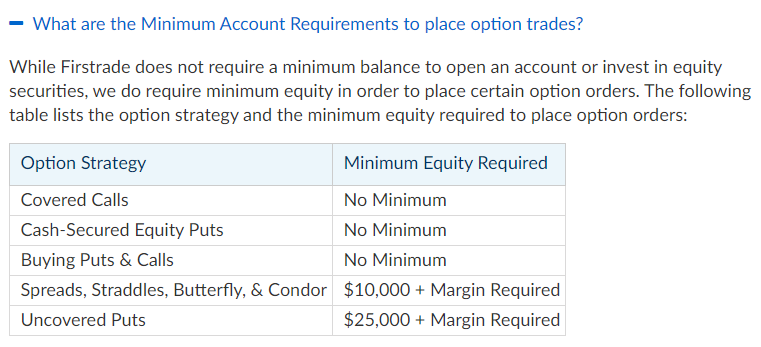

FirstradeオプションFAQのページのグーグル翻訳

FirstradeオプションFAQのページのグーグル翻訳

下記ページのGoogle翻訳です。大事そうな所のメモです。
How do I apply for options trading? In order to trade options, we require investors to submit an Option Application & Agreement. A completed application can be uploaded to Customer Service-Form Center-Upload Form; or emailed to service@firstrade.com.
オプション取引の申し込み方法は？ オプションを取引するために、投資家はオプション申請と契約書を提出する必要があります。完成したアプリケーションは、カスタマーサービス-フォームセンター-アップロードフォームにアップロードできます。またはservice@firstrade.comにメールで送信します。
これに関しては、口座開設の際に、Additional Account Featuresの所で、Options TradingをYESにしてれば、My Accounts > Profile > Account Statusからフォームで申請できるみたいです。私はできました。
What are the Minimum Account Requirements to place option trades?
オプション取引を行うための最低口座要件は何ですか？
While Firstrade does not require a minimum balance to open an account or invest in equity securities, we do require minimum equity in order to place certain option orders. The following table lists the option strategy and the minimum equity required to place option orders
Firstradeは口座開設や株式への投資に最低残高を必要としませんが、特定のオプション注文を出すためには最低資本を必要とします。次の表に、オプション戦略と、オプション注文を出すために必要な最小資本を示します。

プットとコールの買い、カバードコールとキャッシュセキュアドプットに関しては、要件はとくにないみたいですね。
Why am I not allowed to write uncovered calls? Currently, Firstrade does not offer uncovered (naked) calls trading. Uncovered calls involve high levels of risk. For example, if you write a naked call and the price of the underlying security rises, there's no limit as to how much you can potentially lose if the stock keeps rising.
なぜカバーされていないコールを書くことができないのですか？ 現在、Firstradeはカバーされていない（裸の）コールトレーディングを提供していません。明らかになった電話には、高レベルのリスクが伴います。たとえば、ネイキッドコールを作成し、基礎となる証券の価格が上昇した場合、株価が上昇し続けた場合に失う可能性のある金額に制限はありません。
firstradeではネイキッドのコール取引はできないみたいですね。
Can I trade same-day-expiring options? Firstrade allow opening position(s) in same-day-expiring options up to 2PM EST., 2 Hours before market close. Un-executed opening-position same-day-expiring options orders will be automatically cancelled at 3PM EST., 1 Hour before market close.
当日期限切れのオプションを取引できますか？ Firstradeでは、市場終了の2時間前の東部時間午後2時まで、即日満期オプションでポジションを開くことができます。未実行のオープンポジションの当日満期オプション注文は、市場終了の1時間前の東部標準時午後3時に自動的にキャンセルされます。
What are the commissions for option trading? Option trading commission is $0, per contract fee is also $0.
オプション取引の手数料はいくらですか？ オプション取引手数料は0ドルで、契約料あたりは0ドルです。
How do I exercise my option contract? To exercise your option contract(s), simply send an email to service@firstrade.com, detailing the below:
Your full name, and Firstrade account number The number of contracts you would like to exercise The underlying symbol, expiration, and strike price Please note that exercise-requests can be submitted until 4:30PM EST. on the trading day prior to the last trading day of the option contract. Option exercise/assignment fee is $14.95.
オプション契約を行使するにはどうすればよいですか？ オプション契約を行使するには、service @ firstrade.comに以下の詳細を記載したメールを送信してください。
あなたの氏名とファーストレード口座番号 行使したい契約の数 基礎となるシンボル、有効期限、および行使価格 エクササイズリクエストは、東部標準時午後4時30分まで送信できます。オプション契約の最終取引日の前の取引日。オプションの行使/割り当て料金は14.95ドルです。
How do I request a do-not-exercise?
To request a do-not-exercise for your long-option-contract(s), simply send an email to service@firstrade.com, detailing the below: Your full name, and Firstrade account number The number of contracts you would like to do-not-exercise The underlying symbol, expiration, and strike price Please note that do-not-exercise-requests can be submitted until 4:30PM EST. on the last trading day of the option contract.
運動禁止をリクエストするにはどうすればよいですか？ long-option-contract（s）の運動禁止をリクエストするには、service @ firstrade.comに以下の詳細を記載したメールを送信するだけです。
あなたの氏名とファーストレード口座番号 運動しない契約の数 基礎となるシンボル、有効期限、および行使価格 do-not-exercise-requestsは、東部標準時の午後4時30分まで送信できます。オプション契約の最終取引日。
これは権利行使をしたくないときはどうすればいいですか？という意味だと思います。
What happens if I don't exercise my options? If the premium is $0.01 or above (in the money) on the last day of trading, and there is sufficient account equity, generally the option contract will be automatically exercised. If the premium is below $0.01 (out of the money), generally the option will expire (out of the money options short-positions could potentially still get assigned). Firstrade reserves the right to close an option position that may be subject to exercise or assignment, depending upon account equity, buying power, and market conditions.
オプションを行使しないとどうなりますか？ 取引の最終日にプレミアムが（金銭で）0.01ドル以上であり、十分な口座資本がある場合、通常、オプション契約は自動的に行使されます。プレミアムが$ 0.01未満の場合（アウトオブマネー）、一般にオプションは期限切れになります（マネーアウトオプションのショートポジションが潜在的に割り当てられる可能性があります）。 Firstradeは、アカウントのエクイティ、購買力、および市場の状況に応じて、行使または割り当ての対象となる可能性があるオプションポジションをクローズする権利を留保します。
In what price increments are equity and index options quoted? Options related to equities and indexes are quoted in increments of $0.05 for option series with a premium below $3, and $0.10 for all option series with a premium of $3 and above. Exceptions are those options whereby the related security or index is in the Penny Pilot Program.
株式とインデックスのオプションはどの価格上昇で引用されますか？ 株式およびインデックスに関連するオプションは、プレミアムが3ドル未満のオプションシリーズでは0.05ドルずつ、プレミアムが3ドル以上のすべてのオプションシリーズでは0.10ドル単位で見積もられます。例外は、関連するセキュリティまたはインデックスがペニーパイロットプログラムにあるオプションです。
これは価格の最低単位の事かと思います。何ドル刻みで価格が変化するのか。以下でさらに詳しく説明されています
What is the Options Penny Pilot Program? The Penny Pilot Program allows options for some related stocks and indexes to trade in increments of $0.01. The minimum increments for all classes in the Penny Pilot (except for QQQ, IWM and SPY) are: $0.01 for all option series with a premium below $3, and $0.05 for all option series with a premium of $3 and above. The minimum increment for all option series in QQQ, IWM and SPY is $.01.
オプションペニーパイロットプログラムとは何ですか？ ペニーパイロットプログラムでは、関連する株式とインデックスのオプションを0.01ドル単位で取引できます。ペニーパイロットのすべてのクラスの最小増分（QQQ、IWM、およびSPYを除く）は、プレミアムが3ドル未満のすべてのオプションシリーズで0.01ドル、プレミアムが3ドル以上のすべてのオプションシリーズで0.05ドルです。 QQQ、IWMおよびSPYのすべてのオプションシリーズの最小増分は$ .01です。
What must I read before option trading? Prior to buying or selling an option, investors must read a copy of the Characteristics & Risks of Standardized Options, also known as the options disclosure document (ODD) and the Supplement. It explains the characteristics and risks of exchange traded options. https://www.theocc.com/about/publications/character-risks.jsp
オプション取引の前に何を読む必要がありますか？ オプションを売買する前に、投資家はオプション開示文書（ODD）およびサプリメントとしても知られる標準化オプションの特性とリスクのコピーを読む必要があります。取引所で取引されるオプションの特徴とリスクについて説明しています。 https://www.theocc.com/about/publications/character-risks.jsp
Where can I obtain a copy of the Characteristics & Risks of Standardized Options, also known as the options disclosure document (ODD) and the Supplement? Both ODD and the Supplement is available at Form Center > Disclosures section.
オプション開示文書（ODD）およびサプリメントとしても知られる標準化オプションの特性とリスクのコピーはどこで入手できますか？ ODDとサプリメントの両方は、[フォームセンター]> [開示]セクションで利用できます。